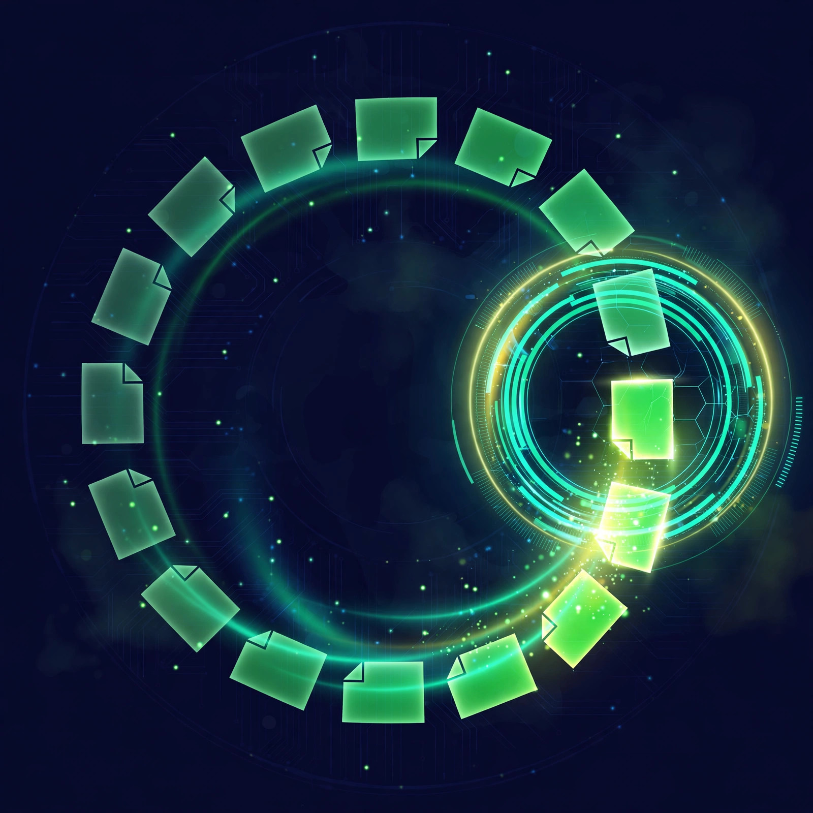

Odoo 20 just dropped, and the day-one question did not change
Odoo 20 launched six days ago at Odoo Experience in Brussels, and the headlines are loud: AI agents that can create and update records instead of just suggesting things, an MCP connector that lets outside AI tools work inside your database, and a redesigned interface with a real dark mode (Macopedia's release rundown, TechNext's plain-language breakdown). It is the most AI-focused Odoo release yet, and the upgrade guides are already everywhere.
Here is what nobody tells you on launch week: the version does not change the day-one answer. I have watched companies do this dance through four major releases now. New version drops, everybody installs everything, and a year later they are paying a partner to untangle the mess. The software got smarter. The discipline still has to come from you.
The problem with app stores
Odoo's app store has thousands of apps. That is the selling point and the trap. Most companies install forty apps on day one, use six of them, and spend the next year untangling the mess. I have watched it happen more times than I can count. The implementation partner smiles, the invoice grows, and the team quietly goes back to spreadsheets because nobody knows which app does what anymore.
The most expensive word in ERP is "while we're at it."
"While we're at it, let's also turn on Field Service. While we're at it, let's customize the quote template. While we're at it..." Every one of those sentences costs you a week and a few thousand dollars. Install forty apps on day one and you will spend the next year paying someone to uninstall your enthusiasm.
Start small. Add apps when someone on your team says "I wish the system could do X" and you realize Odoo already can, you just have not turned it on yet.
The day-one eight
1. CRM. Non-negotiable. Every lead, every conversation, every follow-up lives here. If your salespeople are tracking deals in their heads or in a shared spreadsheet nobody updates, you are leaking money. Odoo's CRM is simple: pipeline stages, activities, reminders. Turn it on first, because every dollar your company makes starts as a lead someone forgot to follow up on.
2. Sales. Quotations, orders, upsells. The Sales app turns a CRM opportunity into a real quote with real line items, then into a confirmed order with one click. Your sales team stops retyping customer info into Word documents. Your customers get professional quotes fast. Speed wins deals, and this app is pure speed.
3. Invoicing. You did the work. Now get paid. Odoo's Invoicing app generates invoices from sales orders automatically, tracks who owes you what, and nags late payers so you do not have to. For a 20-person company, this alone replaces whatever manual billing process is currently held together by one person's memory and a prayer.
4. Inventory. If you sell physical things, you need this on day one. Not month three. Day one. Odoo tracks every unit from receiving to delivery. Without it, you are guessing at stock levels, overselling, and disappointing customers. The companies that skip inventory setup always end up doing an emergency implementation six months later, when the spreadsheet finally lies to them at the worst possible moment. One honest note: the slick barcode-scanning workflows are an Enterprise feature. Community gives you real stock tracking, double-entry inventory, and traceability, which is plenty to start. (Community vs Enterprise breakdown)
5. Purchase. The flip side of sales. When inventory runs low, Purchase generates requests, sends RFQs to vendors, and tracks what is on order. It closes the loop: you sell it, the system knows you need more, and the order goes out before you run dry. Manual purchasing at 20 people means someone's entire job becomes checking stock and emailing suppliers. Automate it.
6. Project. If you deliver services, run implementations, or do any work with a start date and an end date, you need Project. Tasks, deadlines, timesheets, profitability per project. Without it, you have no idea which clients make you money and which ones are quietly draining your team. That is not a feeling you want to discover at year end.
7. Employees. Twenty people means HR is someone's side job. The Employees app keeps contracts, time off, and basic records in one place. It is not a full HR suite and you do not need one yet. But when someone asks "how many vacation days do I have left" and the answer is in somebody's inbox from March, you have a problem this app solves in ten minutes.
8. Website. Your website is your storefront, your brochure, and your credibility check. Odoo's Website builder will not win design awards, but it gets you a professional site connected to your CRM, your products, and your contact forms. A lead fills out a form on your site and lands directly in your pipeline. No copy-paste, no lost leads.
What I would skip (for now)
Email Marketing. Great app, wrong time. Until you have a list worth emailing and someone to write the emails, it is a shiny distraction. Turn it on when marketing becomes somebody's actual job.
Manufacturing (MRP). If you are not making things, skip it. If you are making things, you probably already know you need it, and it is not a day-one install anyway. MRP deserves its own planning conversation.
Field Service. Heads up if you are reading older guides: Odoo 20 folded Field Service into the Planning app (release notes summary). Either way, only turn it on if you have techs going to customer sites. Most 20-person companies do not yet.
Helpdesk. Tempting, but at 20 people your support is probably email and phone. Add Helpdesk when ticket volume gets unmanageable, not before.
Studio (customization). This is the big one. Do not customize on day one. Use Odoo the way it works out of the box for at least 90 days. Every customization is a future upgrade headache, and Odoo only supports the three most recent versions, so upgrades are not optional, they are scheduled (why integrators live and breathe migrations). Learn the standard flows first, then customize the parts that genuinely do not fit.
The order matters
Install them in the order I listed. CRM before Sales, Sales before Invoicing, because that is how money flows through your business. Inventory and Purchase go together because stock in and stock out are two sides of the same coin. Project, Employees, and Website round it out.
Each app takes an afternoon to configure if you know what you are doing, a week if you are figuring it out. Do not try to do all eight in one day. One app per day, tested with real data, beats eight apps configured in a rush that nobody trusts.
Community or Enterprise? The honest two-minute version
Odoo comes in two editions and the pricing is refreshingly public, which in the ERP world is like finding a unicorn. Community is free and open-source; you self-host it and you own the maintenance. Enterprise is a per-user subscription with three tiers: One App Free (one app, unlimited users, $0, a genuinely usable starting point), Standard (all apps, roughly $24.90 to $31.10 per user per month depending on annual or monthly billing), and Custom (adds Studio, multi-company, external API access, and Odoo.sh or on-premise hosting, roughly $37 to $61 per user per month). Regional pricelists vary, so check the numbers from the country you will be billed in. (pricing breakdown, 2026 ERP pricing survey, SMB setup guide)
For the day-one eight, here is the real talk: Community covers most of it. The Enterprise-only pieces you will actually notice are barcode scanning in the warehouse, the mobile apps, Studio for no-code customization, and the deeper accounting automation like bank reconciliation. Everything else on my list runs fine on Community.
And the number that matters more than the subscription: implementation. Industry guides put a realistic small-business all-in year-one figure between $12,000 and $35,000 including licensing, setup, and support, and customization is the layer where quotes diverge hardest (cost breakdown). Which brings us back to the killer line: every "while we're at it" shows up in that number.
The real day-one advice
The apps are the easy part. The hard part is getting your team to actually use them. Pick one person to own the rollout. Give them the authority to say "we do it in Odoo now." And accept that the first two weeks will be slower while everyone learns. Week three is when it pays off, and it pays off every week after that.
Twenty people is the sweet spot for Odoo. Big enough that spreadsheets are breaking, small enough that you can still change how everyone works. Do not waste that window.
Frequently asked questions
Do I need Odoo Enterprise, or is Community enough?
For the day-one eight, Community gets you there for most of it. Go Enterprise when you need barcode scanning, the mobile apps, Studio customization, or automated bank reconciliation. Start free, upgrade when the pain of not having a feature exceeds the subscription. You can move from Community to Enterprise without reinstalling. 
Should I install Odoo 20 or stick with 19?
If you are starting fresh today, start on 20. If you are already live on 19 and stable, there is no emergency; Odoo supports the three most recent versions, so 19 is covered for a while. Never upgrade in a panic during your first 90 days. Get the team using the system first, then talk versions.
Do I need Odoo 20's AI agents on day one?
No. The agentic AI in 20 is genuinely interesting (agents that create purchase orders when inventory triggers hit, lead routing, an accounting assistant), but it runs on prepaid credits and sits on the higher-tier plans (AI features breakdown). Get your eight apps running and your data clean first. AI on top of a messy database just makes expensive mistakes faster.
Can I install these myself, or do I need a partner?
You can install them yourself; the installs take minutes. Configuring them correctly for your business is where a partner earns their fee. Simple processes, DIY is fine. Complex inventory, multi-company, or manufacturing, get help. And get every custom module quote in writing with its future upgrade cost attached, because that second number repeats.
How long does a day-one setup actually take?
The installs take minutes. Configuration takes one to two weeks for all eight apps if someone owns it full-time. Data migration from your old systems is the wildcard. Clean data in, clean system out.
What if we grow past 20 people?
That is the point. These eight apps scale with you. You will add more apps as you grow, but the foundation stays the same. Odoo grows from 20 to 200 without a rip-and-replace.
David Strausser is CEO of Dead Brands, LLC and Head of Sales (contracted) for Quaint Business Solutions, an ERP veteran of over a decade across SAP Business One and Odoo. Ex-General Manager (Northeast) at Vision33, VP of Business Development at SEIDOR. He helps companies stop running on spreadsheets and start running on systems that scale.
Ready to talk about what Odoo could do for your company? Book a meeting and let's figure out your day-one list. And if you want to wear the uniform while you fight spreadsheet chaos, check out the Dead Brands merch store.